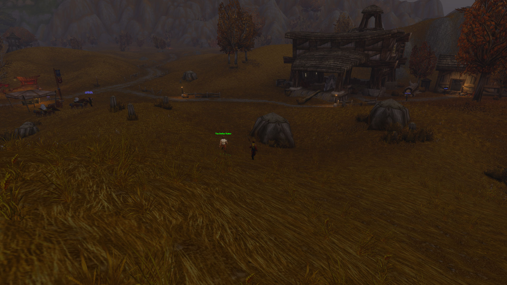

Rhahk'Zor
A brutal ogre foreman guarding the first major passage. A harsh introduction to elite enemies and tightly packed corridors.
Below the ruined village of Moonbrook lies a hidden kingdom of iron, stolen labour and unfinished vengeance. At its heart, Edwin VanCleef waits aboard a ship that has never known the sea.
Xuthar Morvayne · Level 18Entrance discovered · 12 NovFirst descent planned · Fri 13 Nov 2026On 12 November, Xuthar escorted the Defias Traitor through Westfall and uncovered the route to VanCleef's hideout. He has not entered or cleared the dungeon. The adventure is announced for 13 November: no victory, boss kill or party roster has been invented.

Long before the mines became a refuge for bandits, Westfall's underground passages yielded precious ore for the human kingdoms. War left the workings abandoned. In the aftermath of Stormwind's reconstruction, the stonemasons who had rebuilt the capital were denied the just reward they expected, and grievance hardened into revolt.
Edwin VanCleef, a former master stonemason, gave that anger a name: the Defias Brotherhood. Its members spread through the western farms and ruined townships, while goblin engineers constructed a warship in a vast cavern at the end of the old workings. It is this hidden fleet-building operation that makes the Deadmines more than an ordinary bandit camp.
The dungeon's strongest dramatic question is not simply whether VanCleef can be defeated. It is how a city built with the labour of ordinary workers came to fear those same workers, and how their resentment was turned into terror for the people of Westfall.
A typical Classic-route sequence. Optional and rare encounters are clearly marked; all remain unfought in Xuthar's journal.
A brutal ogre foreman guarding the first major passage. A harsh introduction to elite enemies and tightly packed corridors.
An uncommon encounter whose appearance is not guaranteed. Not required to confront VanCleef.
A goblin operator in a dangerous mechanical shredder. The machine and its pilot demand attention in turn.
The goblin engineer overseeing industrial machinery in the foundry. Beyond him the party must open the route toward the hidden shipyard.
The ship's tauren first mate, notorious for stunning groups and changing weapons as the fight progresses.
A pirate officer commanding defenders aboard the ship. His companions make a careless pull costly.
At the top of the ship waits the Brotherhood's founder, defended by blackguards and reinforcements. The objective is his head: 0/1.
The ship's murloc cook. An optional encounter often visited for a chance at distinctive items.
For Xuthar, the challenge is as much one of companionship as combat. A carefully formed group of five — tank, healer and three damage dealers — can turn a perilous journey into a shared story. At level 18 he may be toward the lower end of the usual Classic dungeon range, so the party's levels and roles matter.
Also visible: Retrieval for Mauren, 0/8 Crystallized Scales. A separate Business in Auberdine tracker entry reads Quest Complete! These are photographed objectives, not confirmed hand-ins.
Expedition status: announced, not started. This page is a preparation dossier. Real player encounters, screenshots, boss kills and companions will be added only after they happen in-game.
Read the discovery in The Last Witness →November 12 travel journal →
This is the first entry in the site's Dungeon Chronicles. It combines Xuthar's verified player-reported milestones with broadly documented Classic dungeon lore and mechanics. Forever-specific quest counts and tuning may differ.
Warcraft Wiki · Deadmines (Classic)Wowhead Classic · DeadminesIcy Veins Forever · Defias Traitor escort